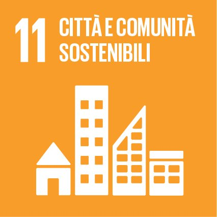
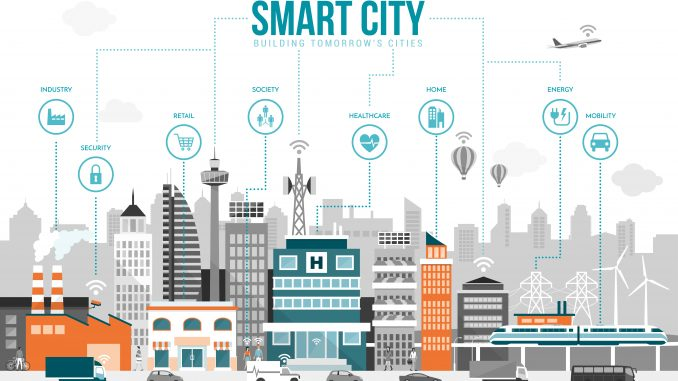

Approfondimento obiettivo 11

Questo obiettivo è quello che aiuta a ridurre le barriere architettoniche e a rinnovare le città
Dati sull'obiettivo:
-
Oggi metà dell’umanità, vale a dire 3,5 miliardi di persone, vive in città
-
Entro il 2030, quasi il 60% della popolazione mondiale abiterà in aree urbane
-
Il 95% dell’espansione urbana nei prossimi decenni avverrà nei Paesi in via di sviluppo
-
Attualmente 828 milioni di persone vivono in baraccopoli, e il numero è in continuo aumento
-
Le città occupano solamente il 3 per cento della superficie terrestre,
tuttavia sono responsabili del 60-80% del consumo energetico e del 75% delle emissioni di carbonio
-
La rapida urbanizzazione esercita pressione sulle forniture di acqua dolce,
sulle fognature, sull’ambiente e sulla salute pubblica
-
L’alta densità delle città può portare efficienza e sviluppo tecnologico,
riducendo il consumo di risorse e di energia
Traguardi:
-
Entro il 2030, garantire a tutti l’accesso ad alloggi adeguati,
sicuri e convenienti e ai servizi di base e riqualificare i quartieri poveri
-
Entro il 2030, garantire a tutti l’accesso a un sistema di trasporti sicuro, conveniente,
accessibile e sostenibile, migliorando la sicurezza delle strade,
in particolar modo potenziando i trasporti pubblici, con particolare attenzione ai bisogni di
coloro che sono più vulnerabili, donne, bambini, persone con invalidità e anziani
-
Entro il 2030, potenziare un’urbanizzazione inclusiva e sostenibile
e la capacità di pianificare e gestire in tutti i paesi un insediamento umano che sia partecipativo,
integrato e sostenibile
-
Potenziare gli sforzi per proteggere e salvaguardare il patrimonio culturale e naturale del mondo
-
Entro il 2030, ridurre in modo significativo il numero di decessi
e il numero di persone colpite e diminuire in modo sostanziale le perdite economiche
dirette rispetto al prodotto interno lordo globale causate da calamità,
comprese quelle legate all’acqua, con particolare riguardo alla protezione dei
poveri e delle persone più vulnerabili
-
Entro il 2030, ridurre l’impatto ambientale negativo
pro-capite delle città, prestando particolare attenzione alla qualità dell’aria
e alla gestione dei rifiuti urbani e di altri rifiuti
-
Entro il 2030, fornire accesso universale a spazi verdi e pubblici sicuri,
inclusivi e accessibili, in particolare per donne, bambini, anziani e disabili
-
Supportare i positivi legami economici, sociali e ambientali tra aree urbane,
periurbane e rurali rafforzando la pianificazione dello sviluppo nazionale e regionale
-
Entro il 2020, aumentare considerevolmente il numero di città e insediamenti umani
che adottano e attuano politiche integrate e piani tesi all’inclusione,
all’efficienza delle risorse, alla mitigazione e all’adattamento ai cambiamenti climatici,
alla resistenza ai disastri, e che promuovono e attuano una gestione olistica del rischio
di disastri su tutti i livelli, in linea
con il Quadro di Sendai per la Riduzione del Rischio di Disastri 2015-2030
-
Supportare i paesi meno sviluppati, anche con assistenza tecnica e finanziaria,
nel costruire edifici sostenibili e resilienti utilizzando materiali locali

Luca Oldoni 2°IB